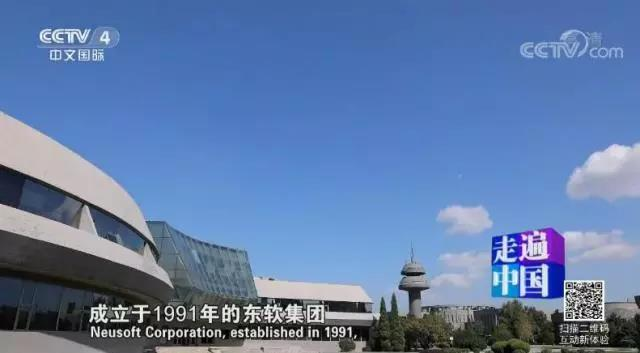
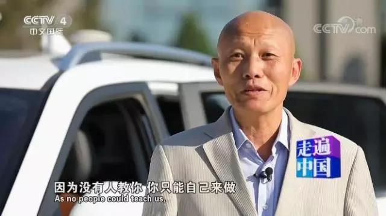
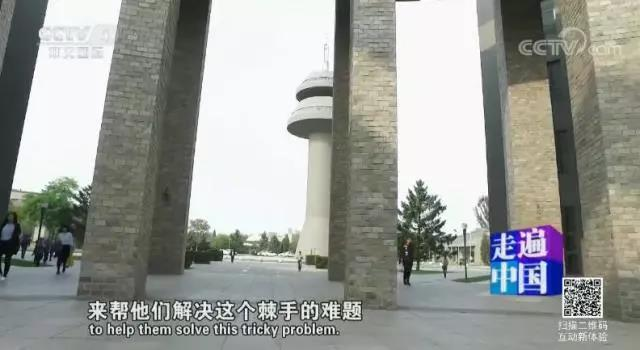
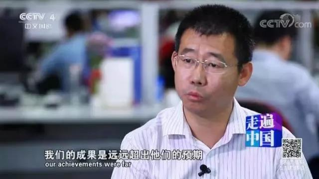
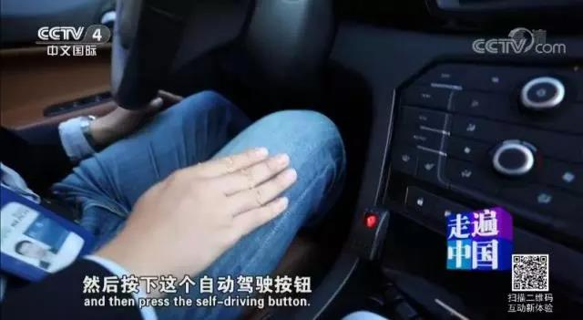
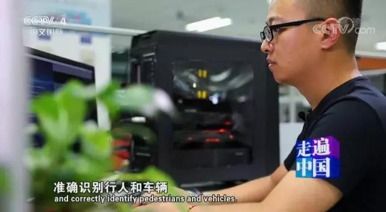
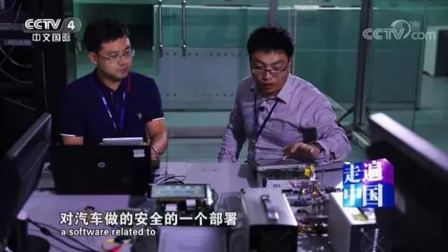
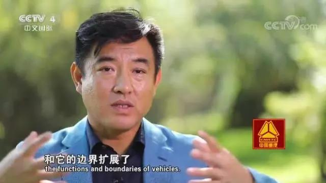

《无人驾驶不是梦》完整版来了！央视给东软睿驰拍了一部专题片
2017-12-19
昨晚，东软睿驰的无人驾驶汽车亮相CCTV-4《走遍中国》。
近30分钟的节目，讲述了东软睿驰如何通过技术创新，在无人驾驶领域寻找方向、探索成长的故事。
除了满满的科技感，片中展现的智能驾驶的生活场景，令人憧憬、振奋。

东软，从汽车电子领域起步，在音响、视频、导航和通信等汽车软件的开发应用，一步步达到国际先进水平。

在无人驾驶领域，东软一直在摸索前行。10多年前，影像识别还是一个冷门领域，国际上论文不多，东软睿驰首席技术官袁淮说。

2004年，日本的一个车企找到东软集团要做无人驾驶影像识别方面的研究，这直接促成了无人驾驶研发中心的成立。

东软睿驰智能驾驶业务线总监刘威，带着仅3人的团队，仅用1年，就在影像画面上达到非常高的识别率。通过严苛的验收和实地测试，日方非常惊讶，也很满意。

东软睿驰的无人驾驶汽车，目前做到L4级别的限定环境下的完全无人驾驶。

在专注于技术的同时，东软睿驰还加入到中国关于无人驾驶行业标准的制定中。

在无人驾驶领域，东软依托人工智能深度学习技术，一边教会机器了解路况信息、准确识别行人和车辆；一边学习驾驶员的行为习惯、行为模式。

无人驾驶汽车遇到黑客攻击怎么办？东软的汽车网络安全事业部，负责研发车辆安全防护软件，并为车辆提供安全加密及安全认证。

无人驾驶技术将给未来的出行带来巨大变革。东软集团总裁兼东软睿驰董事长王勇峰说到，未来汽车要跟金融、能源、通信等行业紧密融合，车的功能扩展了，它不再是单纯的移动工具，而是跟整个出行场景和服务连接起来。
2017年，国家三部委联合印发《汽车中长期发展规划》指出，2020年，辅助驾驶、部分自动驾驶系统等装备率要达到50%；2025年，高度和完全自动驾驶汽车开始进入市场。按照规划，2021年，无人驾驶汽车将进入产业元年……
无人驾驶已经到来，我们准备好了，你呢？